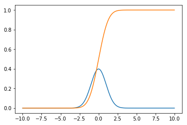
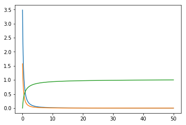
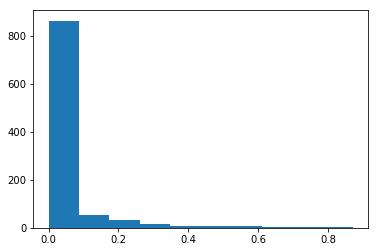
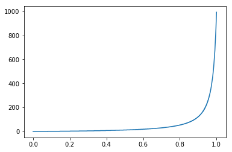
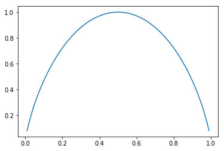
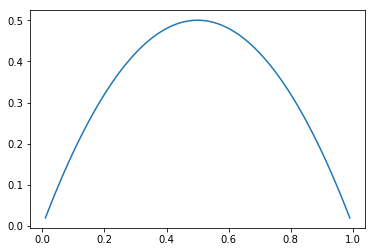
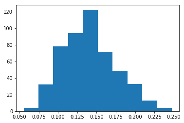

Statistics, continued
In this post I tackle basic algorithms for computing probability density functions and cumulative distribution functions, as well as generating random numbers according to a distribution. Afterwards, I will compute the Gini index (G) and the entropy (H) coefficients, which are used to measure how much a distribution differs from the uniform distribution. Towards the end, I will touch the topic of validation with two methods: bootstrapping and k-fold cross validation.
Generating random numbers according to a given distribution
Let's consider two distributions I will play arond with in this article:
-
Power law - sometimes referred as Pareto. Common in social systems or systems with strong network effects - wealth distribution, group size, productivity, website views. It models preferential attachment. Power law density function is
p(a) ~= a / x^lambdawherelambdareflects the steepness of the fall. I am using~=because the integral on the (-infinity, +infinity) interval should be 1, thus the power law as expressed above is not really a density function. Power Law, Wikipedia -
Gaussian - common in physical systems, common in measurements or small random effect.
N(a, sigma) = C * e^[-(x-a)^2 / 2 * sigma^2], whereCis a constant,ais the average andsigma^2the variance. 88% of the values fall between a+-sigma, 99.7% between a+-3*sigma. Z-scoring (y=(x-a)/sigma) brings the values to the N(0,1) standard form. The standard score (z-score) is the signed number of standard deviations by which the value of an observation or data point is above the mean value of what is being observed or measured. Observed values above the mean have positive standard scores, while values below the mean have negative standard scores. The standard score is a dimensionless quantity obtained by subtracting the population mean from an individual raw score and then dividing the difference by the population standard deviation [Wikipedia]
Let's plot the Probability Density Function and Cumulative Distribution Function of a normally (Gaussian) distributed random variable:
import numpy as np
import matplotlib.pyplot as plt
x_axis = np.linspace(-10, 10, 1000)
def gaussian(x, a, sigma):
return np.e**(-(x-a)**2 / (2 * sigma ** 2))
def pdf(x_step, y):
return y / (np.sum(y) * x_step)
def cdf(y):
cdf_arr = np.empty_like(y)
cdf_arr[0] = 0
for i in range(1, y.size):
cdf_arr[i] = cdf_arr[i-1] + y[i-1]
return cdf_arr / cdf_arr[cdf_arr.size - 1]
def mean(x):
return np.sum(x) / np.size(x)
def sigma(x):
return np.sqrt(1/np.size(x) * np.sum((x-mean(x))**2))
plt.plot(x_axis, pdf(x_axis[1] - x_axis[0], gaussian(x_axis, 0, 1)))
plt.plot(x_axis, cdf(pdf(x_axis[1] - x_axis[0], gaussian(x_axis, 0, 1))))
Result:

In order to draw the PDF, one needs to normalize the function so that its integral is 1 on the (-infinite,+infinite) interval - see the pdf function above. I kept the pdf, cdf, mean and sigma functions generic, so that they can be applied to any distribution, although for the Gaussian, pdf and cdf analytic formulas already exist. The integrals are computed incrementally, thus errors tend to accumulate. For precise results or for production code analytic formulas should be preferred (if they exist).
Now, let's compute a random variable distributed according to a specific probability density function.
Using the functions cdf and pdf from above, I will generate a set a randomly distributed numbers based on the power law distribution. First part generates the numbers. func - the function, pdf_func - probability density of func and cdf_func the cumulative distribution - please note that cdf(func) and cdf(pdf(func)) produce similar results because cdf has normalization embedded.
import numpy.random as rnd
x_axis = np.linspace(0, 50, 1000)
func = 1 / (x_axis + 0.5) ** 1.8
pdf_func = pdf(x_axis[1] - x_axis[0], func)
cdf_func = cdf(func)
plt.plot(x_axis, func)
plt.plot(x_axis, pdf_func)
plt.plot(x_axis, cdf(func))

def rand_cdf(array, cdf_arr):
def inv_cdf(cdf_arr, cnt):
x = np.empty(cnt)
prev_cdf_idx = 1
for i in range(0, cnt):
next_val = float(i + 1) / float(cnt)
while cdf_arr[prev_cdf_idx] < next_val:
prev_cdf_idx = prev_cdf_idx + 1
# a more accurate version would consider a linear interpolation
# between prev_cdf_idx - 1 and prev_cdf_idx
x[i] = prev_cdf_idx - 1
return x / cdf_arr.size
scale = 10000
cdf_inv = inv_cdf(cdf_arr, scale)
return cdf_inv[np.array(array * (scale - 1.0 / scale), dtype=np.integer)]
rand_0_1 = rnd.random(1000)
rand_distributed_arr = rand_cdf(rand_0_1, cdf_func)
plt.hist(rand_distributed_arr)

The rand_cdf takes as parameters two arrays - a uniform randomly distributed array with values between 0 and 1 and the CDF of the function I want my resulting random numbers to be distributed on. Then it computes the inverse of the CDF and uses the random numbers as indices in this array. Please see the CDF^(-1) below:

As one can notice, x axis is between (0,1) and y axis between (0, 1000), where 1000 is the size of the random number array. In plain English, it basically reads: "for any number received as parameter between 0 and 0.8, I will output a very small number. For any number higher than 0.8, I will output a larger number.". As my input is uniformly distributed between (0,1), The probability of outputting a smaller number is much higher than outputting a larger number. How much larger? It is precisely based on the CDF received as input.
Entropy and Gini index
Entropy measures the amount of information in signals being transferred over a communication channel. A rare signal bares more information than a more frequent one and since the signals are considered to be independent of each other, they can be summed up to estimate the total amount of information. Because of these, we can choose log(1/p) = log(p^-1) = -log(p) for scoring the level of information in a signal which appears with probability p. We define entropy to be the averaged level of information in categories of a categorical feature.
Thus, considering a categorical feature with p1..pn probabilities of occurence:
Entropy = H = Sum(-pi log(pi)) and it is smaller than log(n) where n is the number of categories. H for a uniform distribution is log(n) and it is the maximum entropy.
According to Wikipedia:
Entropy is a measure of unpredictability of the state, or equivalently, of its average information content. To get an intuitive understanding of these terms, consider the example of a political poll. Usually, such polls happen because the outcome of the >poll is not already known. In other words, the outcome of the poll is relatively unpredictable, and actually performing the poll and learning the results gives some new information; these are just different ways of saying that the a priori entropy of the >poll results is large. Now, consider the case that the same poll is performed a second time shortly after the first poll. Since the result of the first poll is already known, the outcome of the second poll can be predicted well and the results should not >contain much new information; in this case the a priori entropy of the second poll result is small relative to that of the first.
H of uniform distribution - m elements =>
probability p = 1/m = -Sum(1/p * log(p)) = -p * (1/p) * log(p) = log(1/p) = log(m)
The formulas above translate to the following python code:
def entropy(histogram):
mask = np.ma.masked_values(histogram, 0.0, copy=False)
if type(mask.mask) is np.ndarray:
histogram[mask.mask] = 1e-4 # so we don't have 1/0
prb = histogram / np.sum(histogram)
return np.sum(prb * np.log2( 1 / prb ))
def max_entropy(histogram):
return np.log2(histogram.size)
Example 1:
Compute entropy for a completely skewed distribution of 5 items, [1, 0, 0, 0, 0]
histogram = np.array([1, 0, 0, 0, 0], dtype=np.float)
print ("Entropy: {} ; Max Entropy: {}".format(entropy(histogram), max_entropy(histogram)))
With output:
Entropy: 0.0058899223994331295 ; Max Entropy: 2.321928094887362
Example 2:
Compute entropy for a gaussian distrbuted random variable split into 5 categories.
histogram = np.histogram(rand_gaussian_arr, 5)[0]
print ("Entropy: {} ; Max Entropy: {}".format(entropy(histogram), max_entropy(histogram)))
With output:
Entropy: 1.8286832347936723 ; Max Entropy: 2.321928094887362
Example 3:
Plot the chart for the evolution of the entropy index for a set of probabilities [p, 1-p]
x_axis = np.linspace(0.01, 0.99, 100)
e = np.empty_like(x_axis)
e_idx = 0
probs = np.empty(2)
for i in x_axis:
probs[0] = i
probs[1] = 1.0 - probs[0]
e[e_idx] = entropy(probs)
print (probs, e[e_idx])
e_idx = e_idx + 1
plt.plot(x_axis, e)
With the output:

Gini index is referred also as categorical variance. It was initially introduced to "represent the income or wealth distribution of a nation's residents, and is the most commonly used measure of inequality." [Wikipedia]. We define it as a measurement for the average level of error for the method of the proportional classifier (proportional clasifier: given a feature which appears with a frequency f, its probability equals its frequency).
E.g., consider a category with frequency p = 20%, the average error is p*(1-p) = 20% * 80% = 16%. Gmax = (m-1) / m and is obtained for a uniform distribution. G = sum( p_i * (1 - p_i) ).
Same as before:
def gini_idx(histogram):
prb = histogram / np.sum(histogram)
return 1.0 - np.sum(prb * prb)
def gini_idx_max(histogram):
return (histogram.size - 1) / histogram.size
For Gaussian (5 elements):
histogram = np.histogram(rand_gaussian_arr, 5)[0]
print ("Gini: {} ; Max Gini: {}".format(gini_idx(histogram), gini_idx_max(histogram)))
Gini: 0.674266 ; Max Gini: 0.8
For skewed distribution:
histogram = np.array([1, 0, 0, 0, 0], dtype=np.float)
print ("Gini: {} ; Max Gini: {}".format(gini_idx(histogram), gini_idx_max(histogram)))
Gini: 0.0 ; Max Gini: 0.8
Evolution of Gini index (G) for a set of probabilities (p, 1-p):

Mean, median, entropy index (H) and Gini index (G) are different aggregate indices (summaries) for a distribution. Because our sample size is not large enough, they are subject to measurement errors. If we want to understand a little bit better how much error our computed index on the sample data hides, we can compute its distribution (its mean and its stddev). For instance, if we take the mean as the parameter we want to investigate, we obtain the mean of the mean and the stddev of mean. But any other index can be considered. Two outstanding methods are bootstrapping and K-fold cross validation.
Bootstrapping
Bootstrapping is a resampling method which works like this:
- Consider M random trials and an entity set with N entities
- Randomly extract and put back N entities from the entity set => on average only
(e-1) / e = 63.2%will be selected in a trial. (p of an entity not to be drawn = 1 - 1/N, we have N trials => p of not drawn for N trials is (1 - 1/N)^N -> 1/e = 36% of all entities) - Compute the desired index for the trial
- Summarize for all trials the indices into the mean / stddev form; plot a histogram.
Here is the code for computing mean variation through bootstrapping. We will consider a power-law distribution for start, with 20 extractions.
Initialization:
x_axis = np.linspace(0, 50, 1000)
powerlaw = 1 / (x_axis + 1.0) ** 1.2
rand_0_1 = rnd.random(20) # 20 extractions
rand_powerlaw_arr = rand_cdf(rand_0_1, cdf(powerlaw))
plt.hist(rand_powerlaw_arr) # just check the distribution is power-law-ish

# prepare space for mean for 500 trials
means = np.empty(500)
for i in range(0, means.size): #500 trials
bootstrapped = np.empty_like(rand_powerlaw_arr)
for j in range(0, rand_powerlaw_arr.size):
bootstrapped[j] = rand_powerlaw_arr[int(rnd.random() * rand_powerlaw_arr.size)]
means[i] = np.mean(bootstrapped)
plt.hist(means)
print("Mean of distribution: {:.4f}, Mean boostrapped: {:.4f}, Stddev mean bootstrapped {:.4f} "
.format(np.mean(rand_powerlaw_arr), np.mean(means), np.std(means)))
And the output - shows the distribution of the mean is Gaussian:

Mean of distribution: 0.1402, Mean boostrapped: 0.1408, Stddev mean bootstrapped 0.0346
Intrestingly enough, as the initial sample is quite narrow (20 extractions), the mean and std-dev of mean vary significantly between successive runs of the algorithm.
K-fold cross validation
Another set of validation techniques use the splitting of the initial array into two parts of pre-specified sizes: train set and test set, so the results obtained on the train set are compared with the data from the test set.
K-fold cross validation works as follows:
- Split the set in K parts of equal sizes
- For each part k, 0 <= k < K, use Part_k as the test set and the rest of the parts as the train set.
- The average score of all test sets constitutes a K-fold cross validation estimate of the method quality.
E.g. - mean.
- We split the set in K parts.
- For each part k: we take the rest of K-1 parts and we compute the mean. We compute the mean on the k part and we substract (mean(k-1) - mean_k)^2
- We average all the mean_k obtained before and we also compute the stddev sigma=sqrt(1/K * Sum(squares from step 2))